Понятие о биогеоценозе и экосистеме
Еще сто лет назад для путешествия на тысячу километров понадобились бы недели, сегодня мы тратим на это до двух часов в самолете. Казалось бы, можно выбрать любое место на планете и поселиться там. Однако мы связаны с нашей малой родиной и ее экосистемами тесней, чем можем себе представить. Ученые выяснили, что химический состав воды в нашей крови имеет много общего с составом пресных водоемов, рядом с которыми мы родились и выросли. Кроме того, жителям равнин необходимо больше кислорода, чем горцам. Прогресс сделал географические границы условностью, но каждый человек всё равно остается частью своего биогеоценоза.
Понятие о биогеоценозе и экосистеме
Каждый живой организм связан с окружающей средой потоками вещества и энергии, проходящими через его тело. Потребляя и выделяя вещество и энергию, живые организмы влияют на среду своего обитания уже тем, что живут.
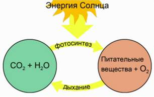
Результаты жизнедеятельности каждого отдельного существа могут быть невелики и малозаметны. Но все вместе они сливаются в мощную силу, преобразующую земную поверхность.
Выдающийся отечественный ученый, естествоиспытатель, автор ряда наук о Земле и учения о биосфере, В.И. Вернадский, писал: «На Земле нет силы, более могущественной по своим последствиям, чем живое существо».
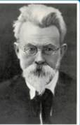
В биоценозах все популяции видов связаны друг с другом сложной пищевой сетью. Энергия поступает в организм животного из растений, которые черпают запасы энергии из неживой природы.
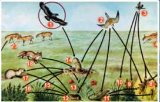
В итоге любой биоценоз представляет собой некое единство со своим биотопом, создавая целостную систему, которую называют экосистемой. Организованная в экосистемы, жизнь на Земле непрерывно продолжается уже миллионы лет.
Экосистемы бывают разных масштабов: наземные и водные
Пруд с его обитателями, озеро, море, океан, небольшой лес, целая тайга, степь и пустыня – всё это природные экосистемы.
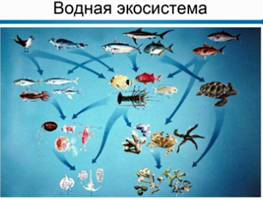
Аквариум, сад, пшеничное поле экосистемы, созданные человеком
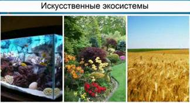
Наземные экосистемы, связанные с участками однородной растительности, называют биогеоценозом.
<imgsrc="StaticImage/6412" alt="" width="245" height="186"/>
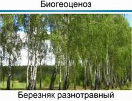
Например, ельник кисличный, ельник зеленомошный и березняк разнотравный, сфагновое болото, луг, ковыльная степь и т.д.
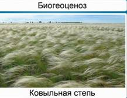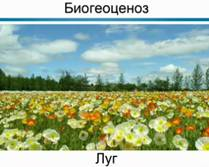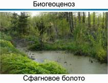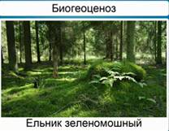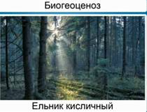
В названии «биогеоценоз» подчеркивается тесная взаимосвязь «био» – живых и «гео» – неживых компонентов на определенном участке поверхности.
Учение о биогеоценозе и сам термин создал русский ботаник Владимир Николаевич Сукачёв.
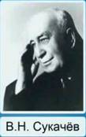
Экосистем на Земле очень много, существенным свойством каждой из них является круговорот веществ и потоков энергии. Из-за большой роли живых организмов круговорот в экосистемах часто называют биологическим круговоротом веществ.
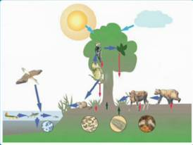
Биологический круговорот веществ является главным условием существования экосистемы.
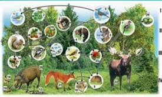
Структура экосистемы
Круговорот веществ в биогеоценозе осуществляется благодаря наличию четырех неотъемлемых компонентов: абиотического компонента, то есть запасов биогенных веществ и солнечной энергии; продуцентов – создающих органическое вещество; консументов – употребляющих органическое вещество; редуцентов – разлагающих мертвое органическое вещество.
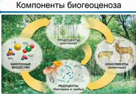
Биогенными веществами называют минеральные соединения, которые используются для синтеза органических веществ.
Продуценты – организмы, создающие эти органические вещества, запасающие в них лучистую энергию Солнца.
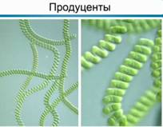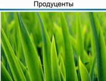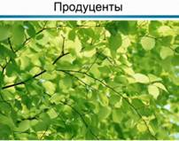
Это фотосинтезирующие растения и некоторые прокариоты (зеленые бактерии, цианобактерии).
Консументы – переработчики органической продукции, в основном животные, а также грибы и некоторые паразитические и насекомоядные растения.
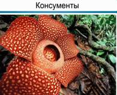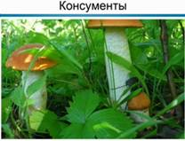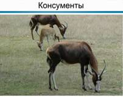
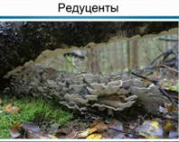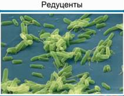
Редуценты – организмы, разлагающие мертвые остатки растений, животных и других представителей живого мира, до минеральных соединений, газа, воды и минеральных солей. В роли редуцентов выступают, преимущественно, бактерии, грибы и некоторые животные.
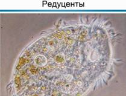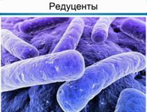
Совместная деятельность этих разных по экологическим функциям групп организмов является двигателем биологического круговорота в биогеоценозе. Биогеоценозы, или экосистемы, устойчивы лишь в том случае, когда все четыре компонента, входящие в их состав, поддерживают круговорот веществ достаточно полно.
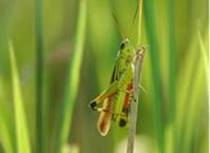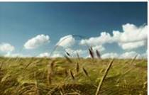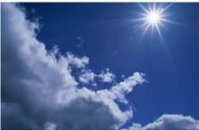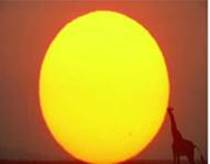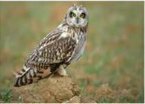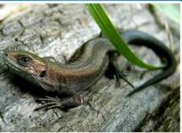
Круговорот веществ поддерживается в биогеоценозах постоянно притоком всё новых и новых порций энергии. Хотя по закону сохранения энергии, она не исчезает бесследно, а лишь переходит из одной формы в другую, круговорота энергии в экосистемах быть не может. Расходуясь на жизнедеятельность организмов, усвоенная ими энергия постепенно переходит в тепловую и рассеивается в окружающем пространстве. Таким образом, деятельность экосистемы напоминает круговое вращение мельничного колеса в потоке воды.
Если взять для примера пищевую цепь «кочан капусты, коза и волк» – можно проследить, как расходуется энергия, полученная от Солнца и связанная в кочане капусты.
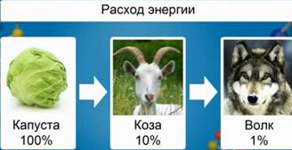
От усвоенной животным пищи лишь небольшая ее доля идет на рост организма, то есть укладывается в теле животного, остальная тратится на обмен веществ, обеспечение размножения, часть удаляется из организма, как неусвоенная пища. Подсчитано, что на рост идет около 10 процентов усвоенной энергии. Следовательно, в теле козы задержится даже менее десятой части энергии, заключенной в кочане капусты, так как часть вещества не усваивается. Когда же волк съест козу, то на рост его тела также достанется 1 процент энергии, которая первоначально была в капусте.
В каждом последующем звене цепи питания количество содержимой энергии уменьшается примерно в 10 раз, и уже через 4-5 звеньев она практически полностью истекает.
Это так называемое правило 10% имеет огромное практическое значение. Это правило позволяет понять, как расходуется в экосистеме продукция, т.е. органическое вещество, создаваемое растениями, за определенный промежуток времени.
На создание 1 кг массы растительноядных животных затрачивается в десять раз больше солнечной энергии, чем на 1 кг массы растений.
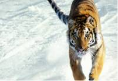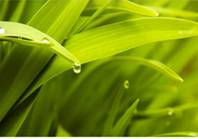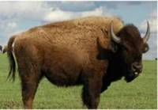
Продукция плотоядных поэтому обходится дороже в сто раз. Передача органического вещества и энергии по цепям питания подчиняется правилу 10%.
Человеческое общество живет за счет первичной и вторичной продукции растений и животных. Продукция животных обходится и людям, и природе дороже, чем растительная. Поэтому проблема голода для населения разных стран начинается, прежде всего, с нехватки вторичной продукции – животных белков, необходимых в рационе человека. Даже в самых устойчивых биогеоценозах Земли круговорот веществ не замкнут, часть вещества переносится ветром, течениями, сносится в понижение рельефа, мигрирует с поверхностным стоком и подземными водами. В результате все экосистемы суши и океана оказываются связанными в единую глобальную систему – биосферу.
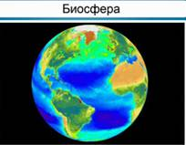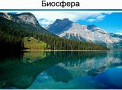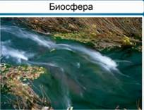
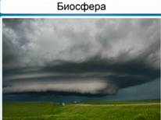
Множество связанных друг с другом круговоротов складываются в установившийся за многие миллионы лет глобальный круговорот биосферы, поддерживающий жизнь на планете.
В. И. Вернадский разработал учение, которое характеризует биосферу не только как область распространения жизни на Земле, но и как часть планеты, преобразованной жизнью. Согласно Вернадскому, круговороты важнейших элементов в биосфере создают организмы. Благодаря им химические вещества оболочек Земли переменно переходят из неживой природы в живое вещество, а из живого вещества – в неживую природу, поэтому биосферу называют глобальной экосистемой.
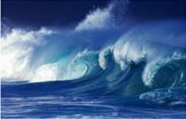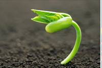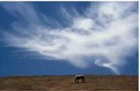
Биологический круговорот зародился с момента появления на земле первых организмов: консервантов, или протобионтов, и продолжается на протяжении миллионов лет. Так поддерживается жизнь и существование биосферы. Биосфера – закономерный продукт эволюции планеты.
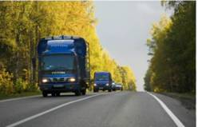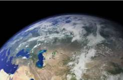
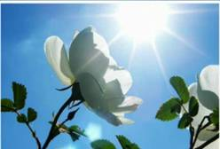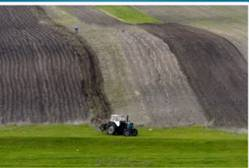
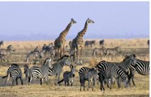
Вместе с тем, биосфера является ареной жизни и хозяйственной деятельности человека. В своем глобальном проявлении биосфера, как глобальная экосистема, аккумулирует энергию с помощью растений и Солнца и трансформирует ее в живые системы, обеспечивая непрерывность и многообразие жизни.
Распределение энергии в трофической сети
Одна и та же порция вещества и заключенная в нем энергия не могут бесконечно передаваться по сложной сети питания, связующей организмы в биогеоценозе. На самом деле, трофическая сеть состоит из переплетения коротких пищевых цепей. Каждое звено ряда называют трофическим уровнем. Примером короткой пищевой цепи является последовательность «капуста (І трофический уровень), коза (ІІ трофический уровень) и волк (ІІІ трофический уровень)».
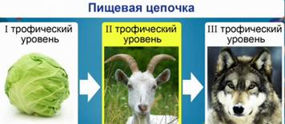
Капуста с экологической точки зрения – продуцент, коза – консумент І порядка, а хищный волк – консумент ІІ порядка.
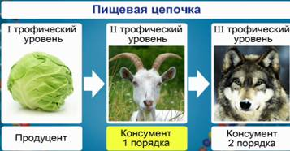
Правило 10%
Правило 10% можно выразить графически и в виде так называемых экологических пирамид. В пирамидах отображают число особей, включенных в пищевую цепь, – пирамида численности; биомассу экосистемы – пирамида биомассы, вовлеченную в оборот энергию – пирамида энергии. Нижняя ступень соответствует первому трофическому уровню, а каждая последующая ступень показывает на десять раз меньше, чем предыдущая.
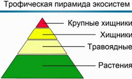
Вопросы:
1. Как вы понимаете «правило экологической пирамиды»?
2. Как связан любой живой организм с окружающими его живыми существами?
3. Назовите наиболее глобальную и самую маленькую экосистему.
4. Чем отличается понятие экосистемы и биоценоза?
Ссылки на литературу
1. Мамонтов С.Г., Захаров В.Б., Агафонова И.Б., Сонин Н.И. Биология. Общие закономерности. – М.: Дрофа, 2009.
2. Пасечник В.В., Каменский А.А., Криксунов Е.А. Биология. Введение в общую биологию и экологию: Учебник для 9 класса. 3-е изд., стереотип. – М.: Дрофа, 2002.
3. Пономарева И.Н., Корнилова О.А., Чернова Н.М. Основы общей биологии. 9 класс: Учебник для учащихся 9 класса общеобразовательных учреждений / Под ред. проф. И.Н. Пономаревой. – 2-е изд., перераб. – М.: Вентана-Граф, 2005.